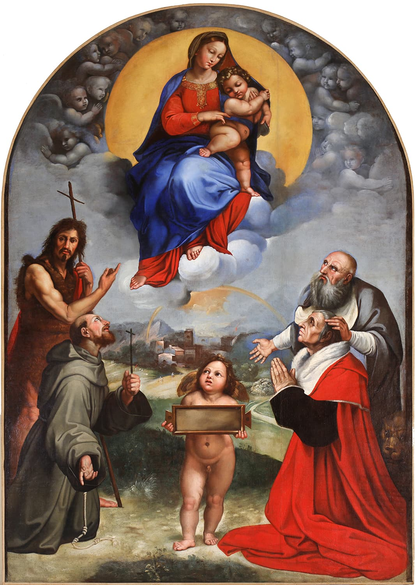

Madonna di Foligno

La Madonna di Foligno di Raffaello Sanzio è un dipinto a olio su tavola trasportato su tela , databile al 1511-1512 e conservato nella Pinacoteca Vaticana nella Città del Vaticano.
Il dipinto venne commissionato da Sigismondo de' Conti, segretario di papa Giulio II, come ex voto per il miracolo che aveva visto uscire la sua casa di Foligno illesa dopo un evento di non chiara origine (bolide o fulmine globulare).L'opera, che fu la prima pala d'altare romana dipinta da Raffaello, si trovava sopra l'altare maggiore della Basilica di Santa Maria in Aracoeli a Roma, nella cui abside era collocata la tomba di Sigismondo.
| Titolo | Madonna del FolignoVIAF |
|---|---|
| Autore | Raffaello SanzioVIAF |
| Data | 1511-1512 |
| Luogo di conservazione | Pinacoteca VaticanaGeoNames |
| Luogo di provenienza | Basilica di Santa Maria in Aracoeli a RomaGeoNames |
| Categoria | Pittura |
| Supporto | Dipinto a olio su tavola trasportato su tela |
| Dimensioni | 308 × 198 cm |
| Codice identificativo | Inv. 40329 |
| XML/DC |